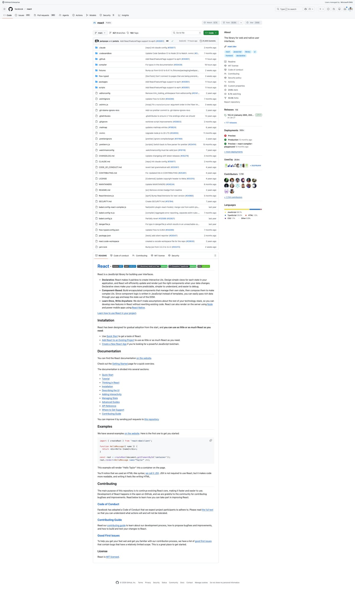
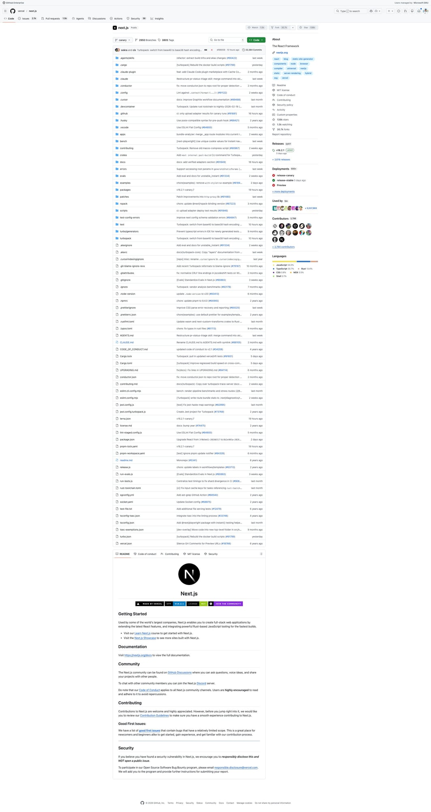
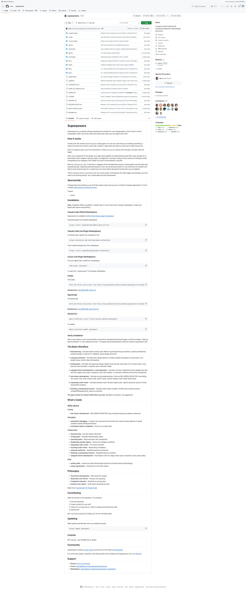
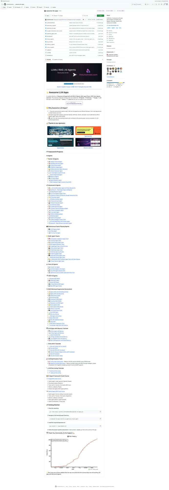
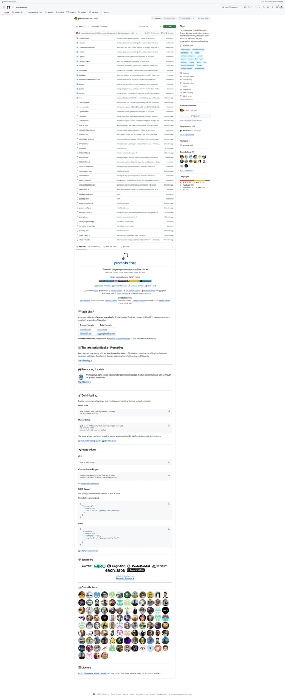

5个Agent Skills新星速报！React错误码、Next.js特性标志等热门技能
Neo整理
Agent Skills 是 AI 编程助手（Claude Code、Codex、Gemini CLI 等）的可复用能力模块。今天我扫描了 SkillsMP 等平台，筛选出来自知名开源项目、实用价值高的热门 Skills。
本期介绍 5 个精选 Skills，涵盖前端框架内部开发、数据分析、AI Agent 并行调度、Widget 插件生成等领域。
Extract Errors：React 错误码管理技能
Extract Errors Skill 来自 Facebook 的 React 仓库，是 React 团队内部用于管理错误消息的开发技能。当你在 React 源码中添加新的错误消息，或看到"unknown error code"警告时自动激活。
💡 核心价值：React 生产环境构建中，错误消息会被压缩为错误码以减小包体积。这个 Skill 确保每个错误都有正确的错误码分配，避免生产环境出现"未知错误"。
使用方式：
- 自动触发 — 在 React 源码中添加新 Error 时激活
- 一键命令 —
yarn extract-errors提取并分配错误码 - 代码检查 — 确认错误码是否需要更新
# 使用流程
1. 在 React 源码中添加新的错误消息
2. 运行 yarn extract-errors
3. 检查是否有新错误需要分配错误码
4. 确认错误码文件已更新
# 触发条件
- 添加新的 Error(...) 调用
- 看到 "unknown error code" 警告
- 修改现有错误消息
Feature Flags：Next.js 特性标志端到端指南
Flags Skill 是 Vercel 团队为 Next.js 内部开发编写的特性标志管理指南。当你修改 config-shared.ts、config-schema.ts 或 define-env-plugin.ts 等核心文件时自动激活。
💡 核心价值：完整覆盖 Next.js 特性标志的全链路：类型声明 → Zod Schema → 构建时注入 → 运行时环境变量 → Bundle 变体选择。这是理解 Next.js 内部架构的绝佳材料。
关键知识：
- 必需布线 —
config-shared.ts（类型）→config-schema.ts（Zod） - 构建时注入 — 客户端代码通过
define-env.ts，Webpack/Turbopack 替换 - 运行时 Bundle — 预编译 bundle 需要在
next-server.ts设置真实环境变量 - Bundle 变体 — 最多 16 种变体：
{turbo/webpack} × {experimental/stable/...} × {dev/prod}
# 两种消费模式
## 1. 客户端/Bundled 代码
# define-env.ts 足够，构建时替换 process.env.X
__NEXT_PPR → define-env.ts → Webpack DefinePlugin
## 2. 预编译运行时 Bundle
# 需要在 next-server.ts + export/worker.ts 设置环境变量
app-render.tsx → process.env.X → 运行时读取
# ⚠️ 陷阱：DefinePlugin 条目必须限定 bundleType
# 避免替换 next-server.ts 中的赋值目标
Dispatching Parallel Agents：多 Agent 并行调度
Dispatching Parallel Agents Skill 来自热门 AI Agent 框架 Superpowers，教你如何将独立任务分派给多个专业 Agent 并行执行。当面对 2 个以上互不依赖的任务时自动激活。
💡 核心价值：将"3 个问题串行解决"变为"3 个 Agent 同时解决"。每个 Agent 获得隔离上下文和明确范围，避免互相干扰。实战证明可以将调试时间缩短到 1/3。
核心模式：
- 识别独立域 — 按子系统/文件/根因分组
- 构建专注 Prompt — 每个 Agent 只给必要上下文
- 并行分派 — 所有 Agent 同时运行
- 审查整合 — 检查冲突、运行完整测试
# 实战案例：6 个测试失败 × 3 个文件
Agent 1 → Fix agent-tool-abort.test.ts
结果：替换 setTimeout 为事件驱动等待
Agent 2 → Fix batch-completion-behavior.test.ts
结果：修复 threadId 位置错误
Agent 3 → Fix tool-approval-race-conditions.test.ts
结果：添加异步工具执行等待
# 结果：零冲突，全部测试通过
# 时间：3 个问题并行解决 = 1 个问题的时间
Data Analyst：SQL + pandas 数据分析专家
Data Analyst Skill 来自拥有 24 万星的 awesome-llm-apps 项目，让 AI 编程助手变身数据分析专家。当用户需要写 SQL、使用 pandas、或进行统计分析时自动激活。
💡 核心价值：将 AI 助手从"代码补全"升级为"数据洞察"。覆盖 SQL 复杂查询、pandas 数据操作、统计假设检验三大核心能力。输出带注释、示例结果和性能建议。
三大核心能力：
- SQL — 复杂 JOIN、子查询、CTE、窗口函数、查询优化
- pandas — 数据清洗、分组聚合、时间序列、缺失值处理
- 统计 — 描述性统计、假设检验、相关分析、基础预测建模
# 触发场景
"帮我写个 SQL 查询用户留存率"
"用 pandas 分析这个 CSV"
"做个 A/B 测试的假设检验"
# 输出规范
- 代码带清晰注释
- 附带示例结果
- 性能优化建议
- 数据发现的解读
Widget Generator：prompts.chat 插件生成器
Widget Generator Skill 来自 prompts.chat（世界最大 AI Prompt 社区），帮你快速生成可定制的 Widget 插件。支持标准 Prompt 卡片和完全自定义 React 组件两种渲染模式。
💡 核心价值：一个完整的插件系统脚手架技能。从配置收集、文件生成、注册到验证，全流程引导。非常适合学习如何为平台编写 Skill 驱动的代码生成器。
两种渲染模式：
- Standard — 使用默认 PromptCard 样式，纯 TypeScript
- Custom Render — 完全自定义 React/TSX 组件
高级定位功能：
- 位置策略 — 支持一次性或重复插入 Feed 流
- 条件注入 — 按搜索词、分类、标签或列表长度动态决定是否显示
- 赞助商支持 — 内置 Logo（明暗模式）和 CTA 按钮
# 定位示例：每 30 条重复插入，最多 5 次
positioning: {
position: 3,
mode: "repeat",
repeatEvery: 30,
maxCount: 5,
}
# 条件注入：仅在开发类别中显示
shouldInject: (context) => {
const slug = context.filters?.categorySlug?.toLowerCase();
return slug?.includes("development");
}
# 生成步骤
1. 收集配置 → 2. 创建 Widget 文件
3. 注册到 index.ts → 4. 添加赞助商资源
5. 类型检查 → 6. 验证
总结
今天介绍的 5 个 Skills 都来自知名开源项目（React、Next.js、Superpowers 等），展现了 Agent Skills 的多样化应用：
- 框架内部型 — React Extract Errors、Next.js Flags（顶级项目的内部开发规范）
- Agent 编排型 — Dispatching Parallel Agents（多 Agent 并行调度模式）
- 数据分析型 — Data Analyst（SQL + pandas + 统计一体化）
- 代码生成型 — Widget Generator（插件系统全流程脚手架）
值得关注的趋势：越来越多顶级开源项目（React、Next.js、n8n）在仓库中内置了 Agent Skills，这意味着 AI 编程助手正在深度融入核心开发流程。Skills 不再只是"外挂"，而是成为了项目的第一等公民。